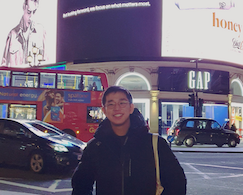

Current Members
Gigi Choi
Postdoc
Since 2016
Peng Zhou (Nick)
Postdoc
Since 2016
Sophia Ma
Postdoc
(w/ Prof. Danny Chan)
Since 2019
Chu Zhang
Postdoc
Since 2020
Athena Chu
Postdoc
Since 2020
Feng Xu (William)
PhD student
Since 2016
Zero Yuen
MPhil student (Since 2018)
Research assistant (2016-18)
John Fong
MPhil student (Since 2019)
BioMed FYP student (2018-19)
Becky Chan
Research assistant (Since 2019)
MPhil student (2017-19)

YukKei Wan
Research assistant
Since 2018
Dawn Thean
Research assistant
Since 2018

Charles Chan
Research assistant
Since 2019
Bei Wang
Research assistant
Since 2020
Cynthia Kwok
Technical Officer
Since 2019
Cindy Tong
Technical Officer
Since 2020
Joe Lam
MCB FYP student
Since 2019
Sophia Zhong
Biochem. FYP student
Since 2019

Ian Sun
BioEng. Intern student
Since 2019
Alumni
Christy Chan (MMed Student 2016-2017)
Anthony Tsang (Technician 2016-2018)
Darren Chu (Biomed. Engineering FYP Student 2017-2018)
Joyce Zhang (Technician 2018-2019)
Jessie Ho (Biochemistry FYP Student 2018-2019; Recipient of the HSBC HK Scholarship and Best Poster Presentations in HKU Research Colloquium for Science Undergraduate Students)
Jien-Vei Khaw (Biomed. Engineering FYP Student 2018-2019)
Ali Muhammad (Biomed. Engineering FYP Student 2018-2019)
Guanhua Xun (Research Assistant 2019)
Rachel Li (Technician 2019)
Peter Fu (Summer Research Fellow 2019 from HKUST; Recipient of the InnoTech Scholarship)
Kylie Mak (Research Assistant 2019-2020)